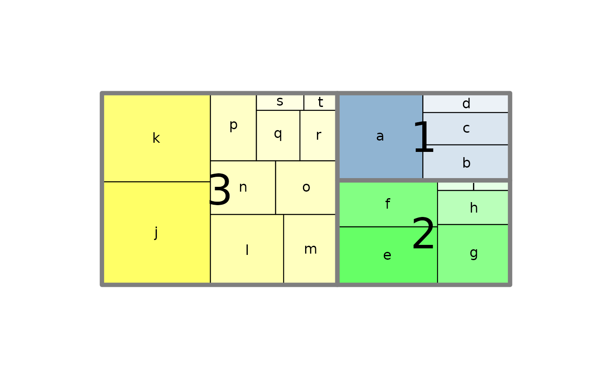
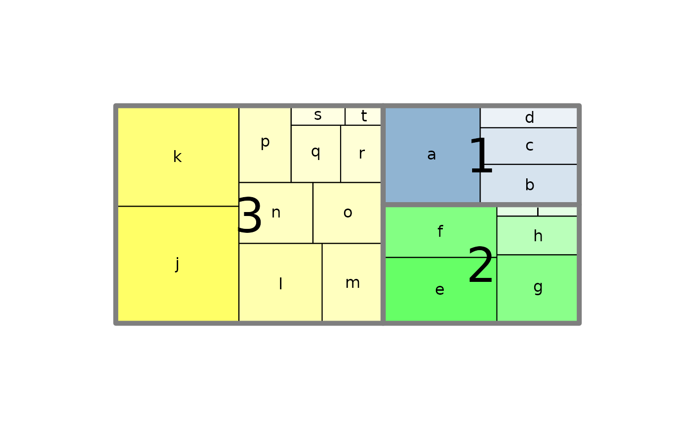

Create a Treemap
PlotTreemap.RdCreates a treemap where rectangular regions of different size, color, and groupings visualize the elements.
Arguments
- x
a vector storing the values to be used to calculate the areas of rectangles.
- grp
a vector specifying the group (i.e. country, sector, etc.) to which each element belongs.
- labels
a vector specifying the labels.
- cex
the character extension for the area labels. Default is 1.
- text.col
the text color of the area labels. Default is "black".
- col
a vector storing the values to be used to calculate the color of rectangles.
- labels.grp
a character vector specifying the labels for the groups.
- cex.grp
the character extension for the group labels. Default is 3.
- text.col.grp
the text color of the group labels. Default is "black".
- border.grp
the border color for the group rectangles. Default is "grey50". Set this to
NAif no special border is desired.- lwd.grp
the linewidth of the group borders. Default is 5.
- main
a title for the plot.
Details
A treemap is a two-dimensional visualization for quickly analyzing large, hierarchical data sets. Treemaps are unique among visualizations because they provide users with the ability to see both a high level overview of data as well as fine-grained details. Users can find outliers, notice trends, and perform comparisons using treemaps. Each data element contained in a treemap is represented with a rectangle, or a cell. Treemap cell arrangement, size, and color are each mapped to an attribute of that element. Treemap cells can be grouped by common attributes. Within a group, larger cells are placed towards the bottom left, and smaller cells are placed at the top right.
Value
returns a list with groupwise organized midpoints in x and y for the rectangles within a group and for the groups themselves.
See also
Examples
set.seed(1789)
N <- 20
area <- rlnorm(N)
PlotTreemap(x=sort(area, decreasing=TRUE), labels=letters[1:20], col=Pal("RedToBlack", 20))
 grp <- sample(x=1:3, size=20, replace=TRUE, prob=c(0.2,0.3,0.5))
z <- Sort(data.frame(area=area, grp=grp), c("grp","area"), decreasing=c(FALSE,TRUE))
z$col <- SetAlpha(c("steelblue","green","yellow")[z$grp],
unlist(lapply(split(z$area, z$grp),
function(...) LinScale(..., newlow=0.1, newhigh=0.6))))
PlotTreemap(x=z$area, grp=z$grp, labels=letters[1:20], col=z$col)

b <- PlotTreemap(x=z$area, grp=z$grp, labels=letters[1:20], labels.grp=NA,
col=z$col, main="Treemap")
# the function returns the midpoints of the areas
# extract the group midpoints from b
mid <- do.call(rbind, lapply(lapply(b, "[", 1), data.frame))
# and draw some visible text
BoxedText( x=mid$grp.x, y=mid$grp.y, labels=LETTERS[1:3], cex=3, border=NA,
col=SetAlpha("white",0.7) )
grp <- sample(x=1:3, size=20, replace=TRUE, prob=c(0.2,0.3,0.5))
z <- Sort(data.frame(area=area, grp=grp), c("grp","area"), decreasing=c(FALSE,TRUE))
z$col <- SetAlpha(c("steelblue","green","yellow")[z$grp],
unlist(lapply(split(z$area, z$grp),
function(...) LinScale(..., newlow=0.1, newhigh=0.6))))
PlotTreemap(x=z$area, grp=z$grp, labels=letters[1:20], col=z$col)

b <- PlotTreemap(x=z$area, grp=z$grp, labels=letters[1:20], labels.grp=NA,
col=z$col, main="Treemap")
# the function returns the midpoints of the areas
# extract the group midpoints from b
mid <- do.call(rbind, lapply(lapply(b, "[", 1), data.frame))
# and draw some visible text
BoxedText( x=mid$grp.x, y=mid$grp.y, labels=LETTERS[1:3], cex=3, border=NA,
col=SetAlpha("white",0.7) )